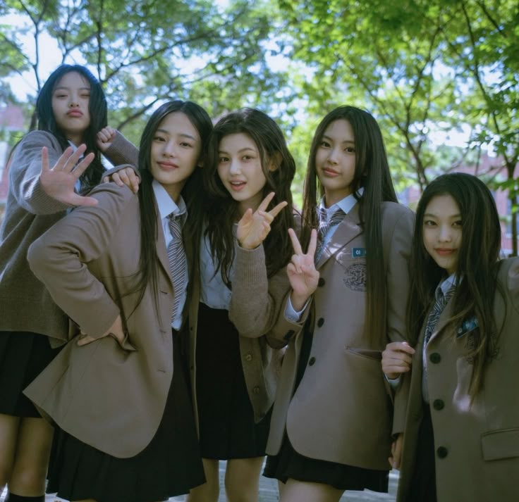
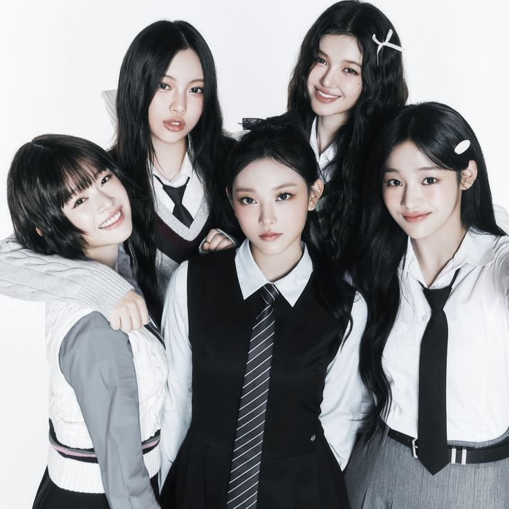

NewJeans is a South Korean K-pop girl group that debuted in July 2022 under ADOR, a subsidiary of HYBE. The group quickly gained international attention for its fresh music style, youthful image, and unique approach to promotion. Originally consisting of five members—Minji, Hanni, Danielle, Haerin, and Hyein—the group became known for hit songs such as “Attention,” “Hype Boy,” “Ditto,” and “Super Shy.” Their music combines pop, R&B, and contemporary sounds, attracting fans from around the world. NewJeans has received numerous awards and recognition for their achievements, making them one of the most influential and successful fourth-generation K-pop groups. Their creativity, talent, and strong connection with fans continue to contribute to their global popularity.